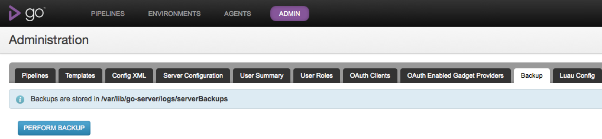
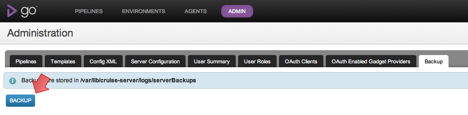
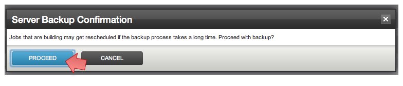

Backup Go Server
You can use Go's administration interface to perform an One-Click Backup of Go. You can also perform the backup using the API.
Steps to initiate backup
- On the Go Administration page, click on the Backup tab. 
- Click on "BACKUP" 
- Click "PROCEED" 
- Backup time is proportional to the database and configuration size. We suggest you backup Go when the Go Server is idle. Users who are logged into the Go Dashboard will be redirected to a maintenance page during the backup. On backup completion they will be redirected to the page they were on.
Note: Go will be unusable during the backup process.
What is backed up?
The backup will be performed into the {ARTIFACT_REPOSITORY_LOCATION}/serverBackups directory. {ARTIFACT_REPOSITORY_LOCATION} for your server can be found as mentioned here.
The backup directory will be named backup_{TIMESTAMP} where the {TIMESTAMP} is the time when the backup was initiated.
- Database – This is in a zip called db.zip . The zip has a single DB file called cruise.h2.db
- Configuration – This is in a zip called config-dir.zip . This zip contains the XML configuration, Jetty server configuration, Keystores and all other Go's internal configurations.
- XML Configuration Version Repo – This is in a zip called config-repo.zip . This zip contains the Git repository of the XML configuration file.
- Go version – This is a file called version.txt . This file contains the version of the Go server when the backup was initiated
What is not backed up?
Note: Please refer to the this page to see what the {SERVER_INSTALLATION_DIR} location is on different platforms.
The following are not backed up as a part of the Go backup process. Please ensure that these are manually backed up regularly.
- Artifacts - Please refer to this section to find out how to deal with artifacts
- Test Reporting Data - This is found at the location {SERVER_INSTALLATION_DIR}/db/shine . This contains the data used in the Failed Test History reporting
- Environment Variables - On Windows the environment variables that might be set for the user and on Linux the changes made to /etc/default/go-server are not backed up.
- Log Files
Artifacts and the Test Reporting Data keep getting new files and directories added to them. So, it is a good idea to use rsync to copy the contents of these two into a backup location.
For Instance: Lets say you have a copy of all the files till 12-02-2012 in a location. On 20-02-2012, you can do something like:
rsync -avzP {ARTIFACT_LOCATION} {BACKUP_LOCATION}
.
This makes sure that only the files and directories that got newly added will be synced to the {BACKUP_LOCATION} and not the entire contents.
Restoring Go using backup
Note: Please refer to the this page to see what the {SERVER_INSTALLATION_DIR} location is on different platforms.
The restoration process is not automated and needs to be done manually. Please refer to the previous sections about the contents of the backup.
Steps to restore
- In order to restore the Go server from a backup, the server must first be stopped. Make sure the process is completely dead before starting the restoration.
-
Choose the backup directory that you want to restore from.
Note: You cannot restore from a backup whose version is bigger than the version of the Go server being used.
For example: If the backup is from version 12.3 and the server installation is of version 12.2, the restoration might not work. You can check the version of the backup from the version.txt file.
-
You might want to keep a copy of all the files and directories that are involved in restoration. This will help in troubleshooting if there was a problem. Following this, make sure
all the destination directories mentioned in the following steps are empty.
For example: Before restoring the Database, make sure the {SERVER_INSTALLATION_DIR}/db/h2db is backed up and the directory is emptied.
- Database – Unzip the db.zip found in the backup directory. Unzip will create a file called cruise.h2.db . Copy this file to the directory {SERVER_INSTALLATION_DIR}/db/h2db .
- Configuration - Unzip the config-dir.zip into a temp directory. Copy all the files from this directory to {SERVER_INSTALLATION_DIR}/config directory on Windows and Mac or /etc/go on Linux and Solaris.
- Configuration History - Unzip the config-repo.zip into temp directory. Recursively copy all the contents from this directory to {SERVER_INSTALLATION_DIR}/db/config.git .
-
Make sure the ownership of all the files that are restored are the same as the user running the Go server.
For example: Make sure you run a "chown -R go:go {SERVER_INSTALLATION_DIR}/db/h2db" after Database restoration.
- Start the Go server